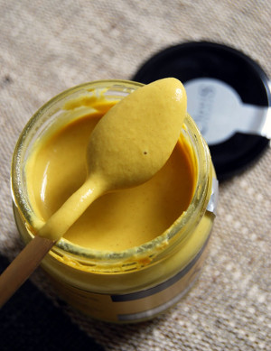
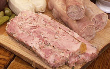

La moutarde de Reims possède une texture lisse, homogène et de couleur jaune paille prononcée. Sa particularité réside dans le fait qu’elle est élaborée à partir de vinaigre de vins de Champagne et enrichie aux épices. Elle présente un nez léger de vin et une saveur piquante. Elle est fabriquée à partir de graines de moutarde brune, d’eau, de vinaigre de Reims, de marc, de sel, de conservateur E222 et d’épices. Sa teneur en matière sèche doit être de 32% minimum.
Traditionnellement, la moutarde accompagne très bien les viandes et participe à la composition de l’assaisonnement des salades et des entrées. Elle est également utilisée dans la grande gastronomie et la cuisine familiale, où elle relève agréablement de nombreux plats. La finesse, la texture et le bouquet, liés à la qualité de ses ingrédients, confèrent à la moutarde de Reims une réputation de qualité et d’excellence.

Tout liquide alcoolique peut donner naissance au vinaigre. Celui de Reims est lié depuis plusieurs siècles au vin de Champagne. En effet, il est élaboré à partir du marc de dégorgement après la seconde fermentation du champagne. Sa couleur est ambrée, son parfum est doux et il possède un goût boisé. Il titre 7° d’acide acétique.
La matière première du vinaigre de Reims est constituée du vin récupéré au moment du dégorgement de chaque bouteille de champagne. Il est ensuite passé en cuve afin de permettre sa transformation en vinaigre sous l’influence du Mycoderma aceti (ferment du vinaigre). La fermentation dure environ 36 heures et permet d’atteindre 7° d’acide acétique. On le met ensuite à vieillir pendant un an en fûts de chêne de 220 litres à température ambiante. A l’issue de cette période, le vinaigre est filtré à l’aide de kieselguhr (diatomées) fait de poudre naturelle filtrante qui n’en altère pas le goût. Il est ensuite conditionné en bouteilles champenoises avec bouchons de liège.
Le vinaigre est traditionnellement utilisé pour l’assaisonnement des salades et des entrées. Tout le monde connaît la vinaigrette… Les vinaigres de qualité trouvent actuellement un regain de notoriété par le rôle qu’ils jouent dans la cuisine dite «nouvelle». Il apporte du piquant et de l’acidité. Écoutons Thierry Voisin, l’ancien chef du restaurant «Les Crayères» à Reims : «Une petite touche d’acidité donne aux mets une extraordinaire longueur en bouche».

Jambon délicat et très fin, le Jambon de Reims fait partie du patrimoine culinaire de la Champagne-Ardenne. Fabriqué à partir d’épaule de porc désossée, cuite dans un bouillon spécial aromatisé, il est ensuite moulé et recouvert de chapelure.
